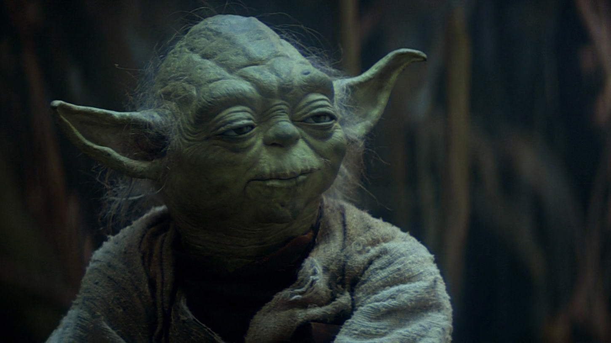

Yoda
Posted on June 6, 2020 at 12:00 PM
Йо́да (англ. Yoda) — один из главных персонажей «Звёздных войн», Гранд-мастер Ордена джедаев, один из сильнейших и мудрейших джедаев своего времени[8][9]. Получил место в Совете Джедаев примерно через сотню лет после своего рождения, а титул гранд-мастера примерно в 600 лет. Авторы, воплотившие персонажа на экране — британские гримёры Ник Дадмэн и Стюарт Фриборн[10].
Происхождение Согласно замыслу Лукаса, Йода должен оставаться загадочной, нераскрытой полностью личностью[4]. Он запретил описывать его происхождение и прошлое во всех книгах, мультфильмах, играх и творчестве по вселенной «Звёздных войн», хотя некоторая информация о магистре-джедае всё же известна[4]. Так, мы знаем некоторые факты из его ранней биографии, но родная планета магистра Йоды, и его расовая принадлежность доподлинно неизвестны. Личность Йода (896 ДБЯ — 4 ПБЯ), озвученный в фильмах Фрэнком Озом[11][12], является вымышленным персонажем, придуманным Джорджем Лукасом[11]. Образ создан на основе рисунка Джое Джонсона[11]. Он принимает участие во всех эпизодах саги, за исключением Эпизода IV: Новая Надежда и Пробуждения силы[13]. Подобно многим именам Звёздных Войн, имя «Yoda» взято из древнего языка — скорее всего, из санскрита, где в переводе «yodha» означает «воин»[14], с иврита же «yodea» переводится «знаю». Однако, если исходить из замысла Лукаса, имя не должно иметь значения, тем не менее, выделяя персонажа. Способен двигать предметы силой взгляда. Речь героя Речь магистра Йоды богата различными инверсиями, которые встречаются почти в каждом его предложении. На «Галактическом основном» Йода разговаривает, инвертируя порядок слов. Предпочитаемый им порядок — «объект-субъект-предикат», OSV. Однако иногда персонаж говорит, используя менее экзотический порядок субъект-предикат-объект. Типичный пример высказывания Йоды: «Your apprentice Skywalker will be»[15]. Показательно, что японский язык имеет именно такой порядок слов в предложении. В честь этой особенности речи был назван приём программирования «Условия Йоды», заключающийся в том, что меняют порядок написания значения переменной и саму переменную.